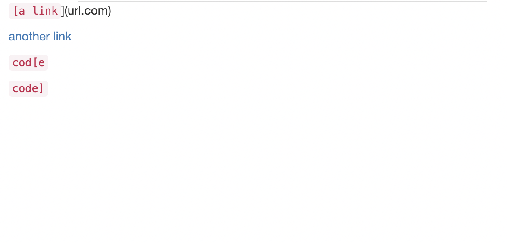
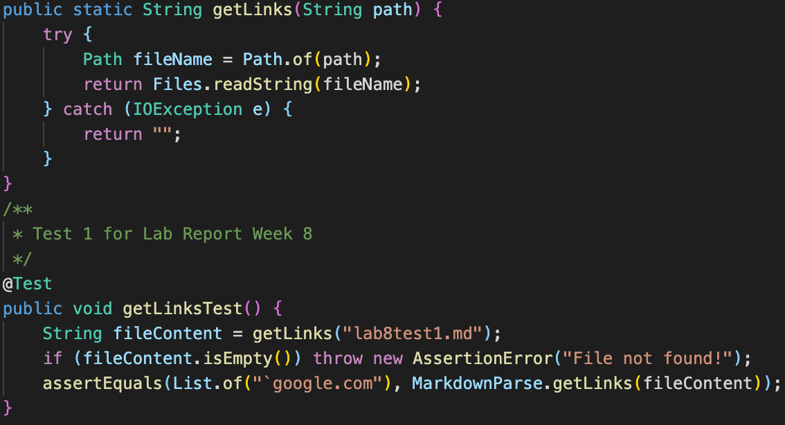
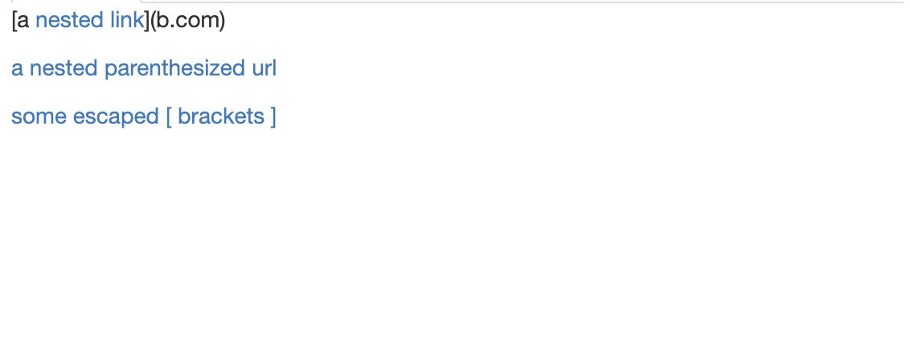
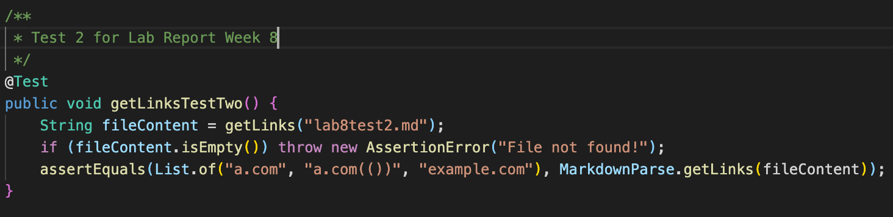
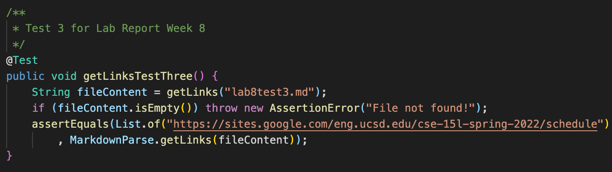

My MarkdownParse repository can be found here. My group was asked to review this repository.
We are given the following Markdown code to test against their MarkdownParse.java file:
`[a link`](url.com)
[another link](`google.com)`
[`cod[e`](google.com)
[`code]`](ucsd.edu)
This is the result we are expecting:
Let's create a test for this file in MarkdownParseTest.java:
We are expecting our MarkdownParse.java file to correctly locate one link. Let's run the JUnit Test and see what our result is:
java.lang.AssertionError: expected:<[`google.com]> but was:<[url.com, `google.com, google.com, ucsd.edu]>
at org.junit.Assert.fail(Assert.java:89)
at org.junit.Assert.failNotEquals(Assert.java:835)
at org.junit.Assert.assertEquals(Assert.java:120)
at org.junit.Assert.assertEquals(Assert.java:146)
at MarkdownParseTest.getLinksTest(MarkdownParseTest.java:32)
This is the result of the test when ran on my own code:
java.lang.AssertionError: expected:<[`google.com]> but was:<[url.com, `google.com, google.com, ucsd.edu]>
at org.junit.Assert.fail(Assert.java:89)
at org.junit.Assert.failNotEquals(Assert.java:835)
at org.junit.Assert.assertEquals(Assert.java:120)
at org.junit.Assert.assertEquals(Assert.java:146)
at MarkdownParseTest.getLinksMyTestOne(MarkdownParseTest.java:69)
It turns my version of MarkdownParse.java thought some links were links when they were not supposed to be. Looking at my code, it appears that there are other code changes that would have to be made that would be much more involved. The code would have to look for other characters (such as ` and extra []) and make sure it does not include that to be a link. This is one of many tests that will cause me to make more intrusive changes to MarkdownParse.java.
Next, we are given more Markdown code to test against their MarkdownParse.java tester. Here is the markdown:
[a [nested link](a.com)](b.com)
[a nested parenthesized url](a.com(()))
[some escaped \[ brackets \]](example.com)
This is the result we are expecting from their parser:
Let's create another test for this file in MarkdownParseTest.java:

java.lang.AssertionError: expected:<[a.com, a.com(()), example.com]> but was:<[a.com, a.com((, example.com]>
at org.junit.Assert.fail(Assert.java:89)
at org.junit.Assert.failNotEquals(Assert.java:835)
at org.junit.Assert.assertEquals(Assert.java:120)
at org.junit.Assert.assertEquals(Assert.java:146)
at MarkdownParseTest.getLinksTestTwo(MarkdownParseTest.java:32)
And this is what happens when it is ran on my code:
java.lang.AssertionError: expected:<[a.com, a.com(()), example.com]> but was:<[a.com, a.com((, example.com]>
at org.junit.Assert.fail(Assert.java:89)
at org.junit.Assert.failNotEquals(Assert.java:835)
at org.junit.Assert.assertEquals(Assert.java:120)
at org.junit.Assert.assertEquals(Assert.java:146)
at MarkdownParseTest.getLinksMyTestOne(MarkdownParseTest.java:79)
It appears that most of the links worked, except for the middle one. This seems like a minor change in code as the expected result is not much different from the actual result. I should probably have the algorithm look for the last parenthesis in the line, rather than the first one that it comes across.
Here's the last snippet of markdown code that we will put up against their tester:
This is the result we are expecting from their parser:
[this title text is really long and takes up more than
one line
and has some line breaks](
https://www.twitter.com
)
[this title text is really long and takes up more than
one line](
https://sites.google.com/eng.ucsd.edu/cse-15l-spring-2022/schedule
)
[this link doesn't have a closing parenthesis](github.com
And there's still some more text after that.
[this link doesn't have a closing parenthesis for a while](https://cse.ucsd.edu/
)
And then there's more text
Let's go ahead and create our final test for this file:

java.lang.AssertionError: expected:<[https://sites.google.com/eng.ucsd.edu/cse-15l-spring-2022/schedule]> but was:<[
https://www.twitter.com
,
https://sites.google.com/eng.ucsd.edu/cse-15l-spring-2022/schedule
, github.com
And there's still some more text after that.
[this link doesn't have a closing parenthesis for a while](https://cse.ucsd.edu/
]>
at org.junit.Assert.fail(Assert.java:89)
at org.junit.Assert.failNotEquals(Assert.java:835)
at org.junit.Assert.assertEquals(Assert.java:120)
at org.junit.Assert.assertEquals(Assert.java:146)
at MarkdownParseTest.getLinksTestThree(MarkdownParseTest.java:45)
And this is what happens when it is ran on my code:
java.lang.AssertionError: expected:<[https://sites.google.com/eng.ucsd.edu/cse-15l-spring-2022/schedule]> but was:<[]>
at org.junit.Assert.fail(Assert.java:89)
at org.junit.Assert.failNotEquals(Assert.java:835)
at org.junit.Assert.assertEquals(Assert.java:120)
at org.junit.Assert.assertEquals(Assert.java:146)
at MarkdownParseTest.getLinksMyTestOne(MarkdownParseTest.java:89)
This is one major issue that I discovered with my Markdown Parser. I need to account for links taking up multiple lines, which I did not originally consider. This would require a lot of rewriting.